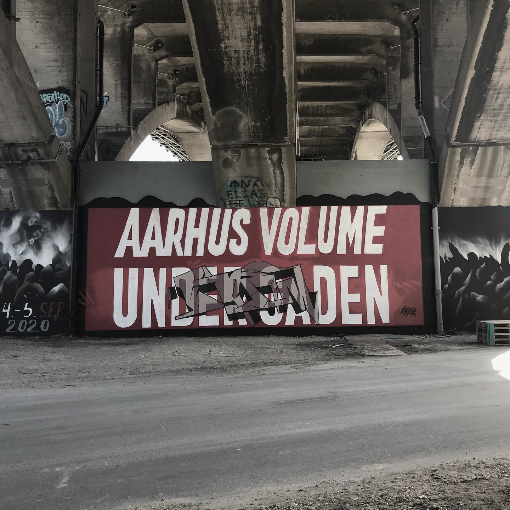
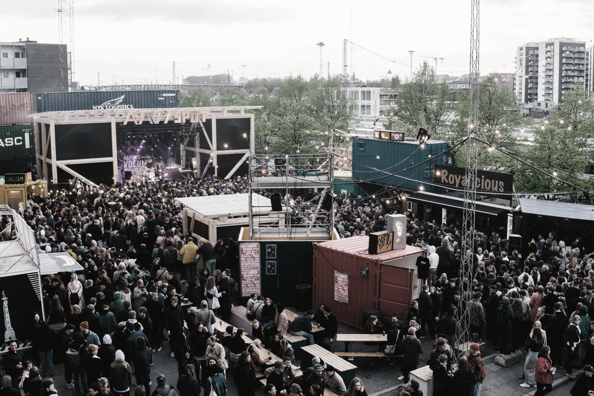

Læs mere
Historie

Bliv frivillig

Læs mere
Aarhus Volume opstod i 2014, da Albert Helmig stødte på et par ligesindede unge mennesker på Frontløberne i Aarhus. Konceptet stod ikke klart fra starten, men de havde en fælles interesse for at lave arrangementer i Aarhus by, som de synes manglede i byen, og selv ville deltage i.
De var et ungt team, hvorfor det på daværende tidspunkt var nemmere at afprøve ideen, før de fandt frem til om det var legalt. Derfor startede Aarhus Volumes gadefester som piratfester.
Aarhus Volume opstod i 2014, da Albert Helmig stødte på et par ligesindede unge mennesker på Frontløberne i Aarhus. Konceptet stod ikke klart fra starten, men de havde en fælles interesse for at lave arrangementer i Aarhus by, som de synes manglede i byen, og selv ville deltage i.
De var et ungt team, hvorfor det på daværende tidspunkt var nemmere at afprøve ideen, før de fandt frem til om det var legalt. Derfor startede Aarhus Volumes gadefester som piratfester.
Aarhus Volume opstod i 2014, da Albert Helmig stødte på et par ligesindede unge mennesker på Frontløberne i Aarhus. Konceptet stod ikke klart fra starten, men de havde en fælles interesse for at lave arrangementer i Aarhus by, som de synes manglede i byen, og selv ville deltage i.
De var et ungt team, hvorfor det på daværende tidspunkt var nemmere at afprøve ideen, før de fandt frem til om det var legalt. Derfor startede Aarhus Volumes gadefester som piratfester.
Aarhus Volume opstod i 2014, da Albert Helmig stødte på et par ligesindede unge mennesker på Frontløberne i Aarhus. Konceptet stod ikke klart fra starten, men de havde en fælles interesse for at lave arrangementer i Aarhus by, som de synes manglede i byen, og selv ville deltage i.
De var et ungt team, hvorfor det på daværende tidspunkt var nemmere at afprøve ideen, før de fandt frem til om det var legalt. Derfor startede Aarhus Volumes gadefester som piratfester.
Som frivillig får du en række fordele, en uforglemmelig oplevelse og et indblik i festivalafvikling. Aarhus Volume er bestående af unge mennesker med plads til alle.
Som frivillig får du:
I år foregår Aarhus Volume Under Gaden 2021 under Aarhus Festuge 2021 og Aarhus Volume kan bidrage til festugen med kultur og musikoplevelser på et højt kvalitetsniveau.
Det bliver en ny tilføjelse til festugen, der hiver vækstlags kulturen med ind i resten af Aarhus’ festkultur.